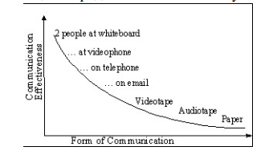

Мысли про статью Люди как нелинейные и наиболее важные компоненты в создании программного обеспечения
Известная статья Алистэра Коуберна Люди как нелинейные и наиболее важные компоненты в создании программного обеспечения раскрывает важную сторону разработки ПО, и в общем-то и других областей деятельности людей. Ниже краткий конспект этой статьи с доабвлением моих мыслей по поводу содержания статьи.
Первичным компонентом в проекте являются люди. От них в большей степень зависит успех или провал проекта, другие факторы (методология, артефакты, процесс) влияют в меньшей степени. Другими словами, любую методологию можно применить чтобы сделать проект успешным и также любая методология может привести к провалу проекта. Это следствия того что методология не основной фактор.
Продолжая эти размышления мы приходим к вопросу
Какими качествами обладают люди, которые занимаются разработкой программного обеспечения, и какое влияние они оказывают на проектирование методологии?
Коммуникация
Одни из основных параметров влияющих на проект — это степень коммуникации между людьми. Наиболее эффективными являются обсуждения лицом к лицу, перед доской или ПК. При исключении свойств коммуникации её эффективность падает.

Непостоянство
Люди непостоянны. Все методологии (особенно строгие) должны иметь поддерживающие, контролирующие процессы. Например, в scrum таких механизмом является scrum-мастер — человек который следит за правильным выполнением процессов.
Гражданский долг и инициатива
Это наиболее важный и спорный раздел в статье.
Коуберн говорит, что на определённом этапе успешных проектов люди берут инициативу в свои руки и это и есть один из факторов успешности проекта. Возможная причина по которой люди берут инициативу на себя — чувство гражданского долга. Что именно он имеет в виду под "чувством гражданского долга" не раскрыто.
Инициатива участников проекта действительно является важным для завершения проекта. И люди её проявляют. Но надо учитывать некоторые факторы текущей организации общества. Люди работают в коммерческих организациях. Деятельность таких организаций направлена на получение прибыли. Не на достижение целей общества или сотрудников. Таким образом некое чувство гражданского долга может быть только мифом скрывающим реальное положение вещей в капиталистическом обществе. Выгодно оно только владельцу который получает доход с продукта.
Впадать в другую крайность и отрицать необходимость сплочённой команды, командного духа и инициативы тоже нельзя — они важны. Но они не должны быть получены обманным путём. Если и использовать понятие долга, то в контексте долга перед коллегами и другими трудящимися жизнь и работа которых зависит или связана от выполняемого проекта.
Хорошая ориентация в окружающей обстановке
Люди достаточно ориентируются в обстановке внутри своего круга влияния. Отсюда следует, что затраты на документацию должны быть обоснованы, её нужно создавать именно на том уровне детализации который адекватен задачам. Вместо упора на документации более эффективен упор на коммуникацию.
Люди разные
При выборе методологии должны учитываться конкретные люди которые будут по ней работать. На одном проекте, но с разными людьми могут быть эффективны разные методологии.
Другие факторы
В статье подробно не раскрыты.
- Человек обучается с помощью наблюдения и практики.
- Время "в потоке" должно быть сбалансировано со временем коммуникации.
- Кинетическое и мульти-сенсорное мышление.
- Работа по примерам.
- Личные свойства характера.
- Консерватизм.
- Привычки.
- Ограниченность мышления и памяти у одного человека.